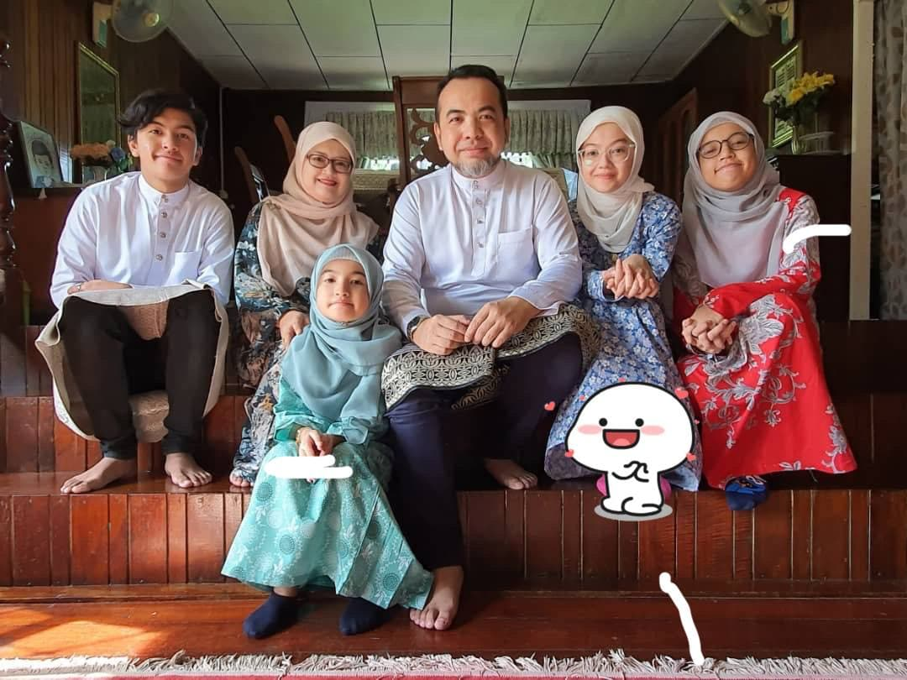

This is my family. i have 4 siblings and im the eldest one. My father is a lawyer and my mother is an English Teacher. I love my family and i am thankful to them for helping and supporting me in whatever I do. Every child has certain dreams and aspirations. Families are really essential as they help in our growth and development. They establish us into a complete person with which we create our own individual identity. Moreover, they always provide us with a sense of security and this gives us a safe environment. However, not everyone is lucky to get the support of their family to attain them. I am one of those few lucky ones who have got complete support from my family in this regard.
IMD311 Amalin Rosley's Personal Website